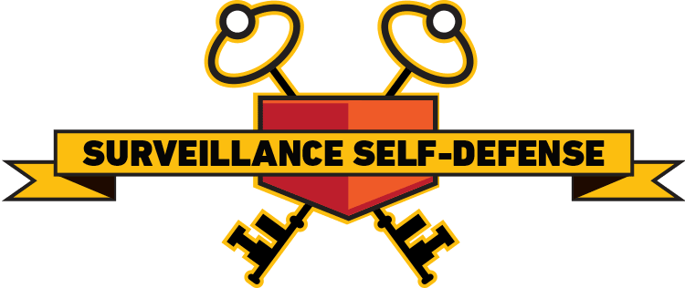

Digital Security
in the Age of Surveillance
Threat Modeling
What are you afraid of?
Pick your tools accordingly.

https://ssd.eff.org
You
Reliant on digital tools
Strong online presence
Working with marginalized groups
Active in the resistance
Not you?
You have a different threat model.
You need to do more research.
I can help.
The Basics
Securing what you already use
Update Everything!
Update your phone
Update your computer
Update your web browser
Use Strong Passwords
Never reuse passwords
hound summon light bully bald acorn
Diceware
6-8 words
Password Manager
1Password, KeePassX, LastPass, Dashlane

Use Two-Factor Authentication
Something you know
Something you have

Physical access
Set a passcode on your phone
6 digits or more
Full-disk encryption
Don't use SMS
Avoid the green bubble
Avoid Email